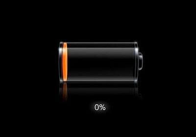

В нашей среде яблофагов это не принято, но батарея на айфоне — это полная грусть.

Я вообще не пойму, когда эту батарею преподносят как преимущество айфона.
На рабочий день её хватает только при одном условии — если телефоном не пользоваться. Все мои знакомые владельцы айфонов имеют зарядные устройства везде. Отдельно стоит отметить моментальный разряд батареи процентов с 20, и даже с 40, до 0 на холоде (холод — это примерно от нуля и ниже).
С последним апдейтом IOS всё стало только хуже.